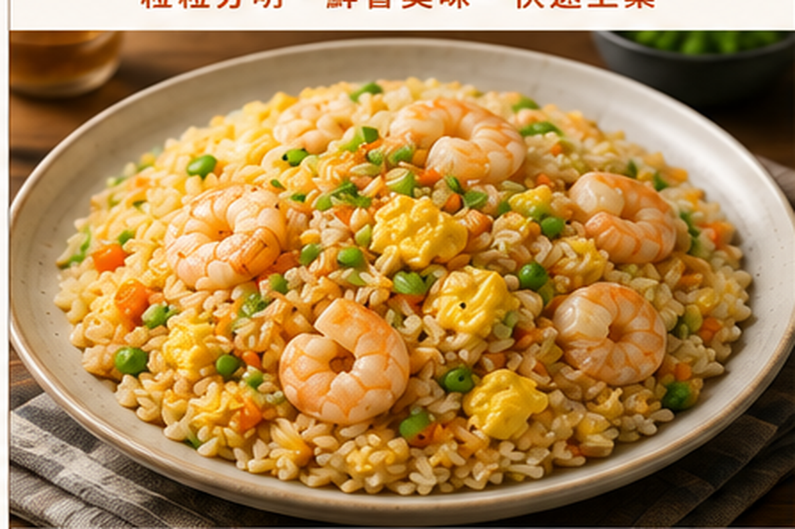
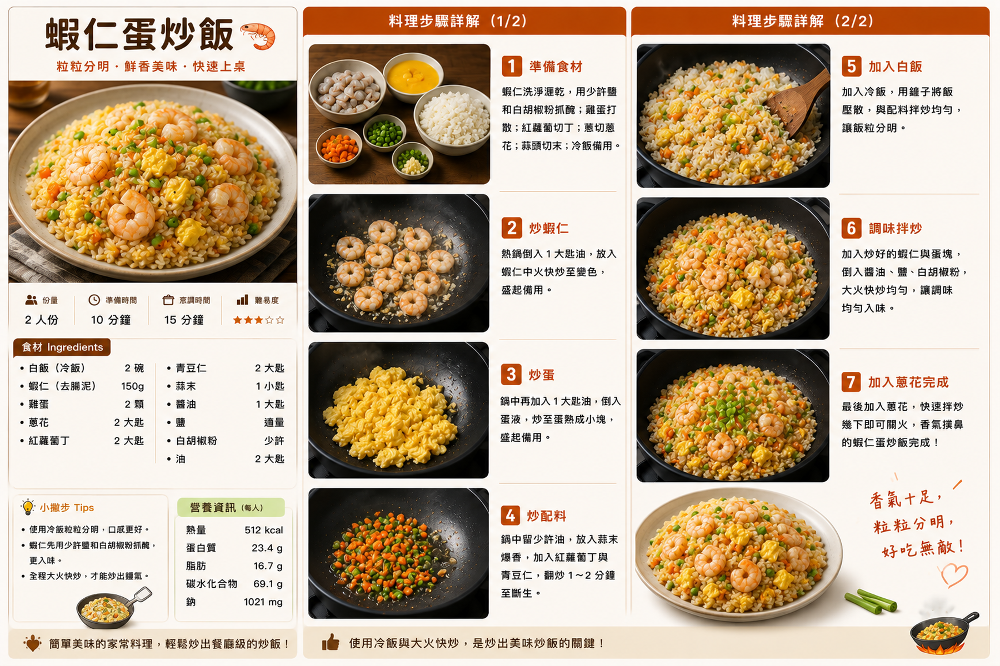

蝦仁蛋炒飯
粒粒分明、蝦仁鮮甜的家常蛋炒飯，利用冷飯與大火快炒，讓米飯乾爽不黏、蛋香與蝦香充分融合。
食譜指南
點擊可放大檢視 🔍
料理步驟
共 7 步01
蝦仁洗淨瀝乾，以少量食鹽與白胡椒粉抓勻；雞蛋打散；胡蘿蔔切小丁、青蔥切花、大蒜切末，冷飯撥鬆備用。
02
炒鍋燒熱，加入約一半沙拉油，放入蝦仁以中火快炒至變色、表面捲曲，立即盛出備用。
03
原鍋加入剩餘沙拉油，倒入蛋液，炒至凝固但仍保持嫩度，撥成小塊後盛出或推至鍋邊。
04
鍋中放入大蒜、胡蘿蔔與豌豆，快速翻炒約2分鐘，讓蔬菜稍微變軟並帶出蒜香。
05
加入冷白飯，用鍋鏟將飯粒壓散，持續大火翻炒，讓飯粒與配料均勻混合並炒乾。
06
加入炒好的蝦仁與蛋，淋入醬油，撒入少量食鹽與白胡椒粉，大火快速翻炒至香氣均勻。
07
最後加入青蔥花，快速翻炒約20至30秒即可關火，趁熱盛盤享用。